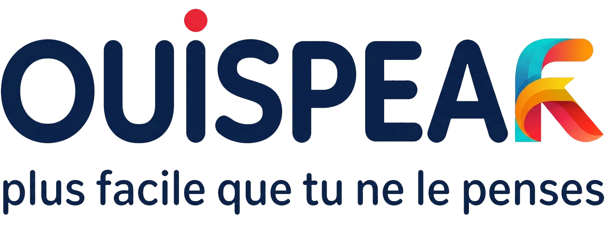

კურსები
სავარჯიშოები
ლექსიკა
ჩანაწერები
შეფასებები
0
/100
გამოსვლა
სავარჯიშოებზე წვდომა
სტუდენტის ID (Student ID)
ელ-ფოსტა (Email)
პაროლი (Password)
შესვლა
ონლაინ სავარჯიშოები
აირჩიეთ კვირა
კვირა 1
კვირა 2
კვირა 3
კვირა 4
კვირა 5
კვირა 6
კვირა 7
კვირა 8
კვირა 9
კვირა 10
კვირა 11
კვირა 12
კვირა 13
კვირა 14
კვირა 15
კვირა 16
კვირა 17
კვირა 18
კვირა 19
კვირა 20
კვირა 21
კვირა 22
კვირა 23
კვირა 24
კვირა 25
კვირა 26
შენახვა
პასუხების გადმოწერა
პასუხების გაგზავნა